Library Book Collection
These books are available for students to borrow, simply consult Ms.Agnis during the break
What Our Students Are Reading
"I like this book because it delves into the minds of infamous criminals, exploring the psychological factors that drive them to commit horrible acts. it provides insight into the dark and disturbing motivations behind serial killers, offering a chilling glimpse into the human psyche, I find those type of books really entertaining"
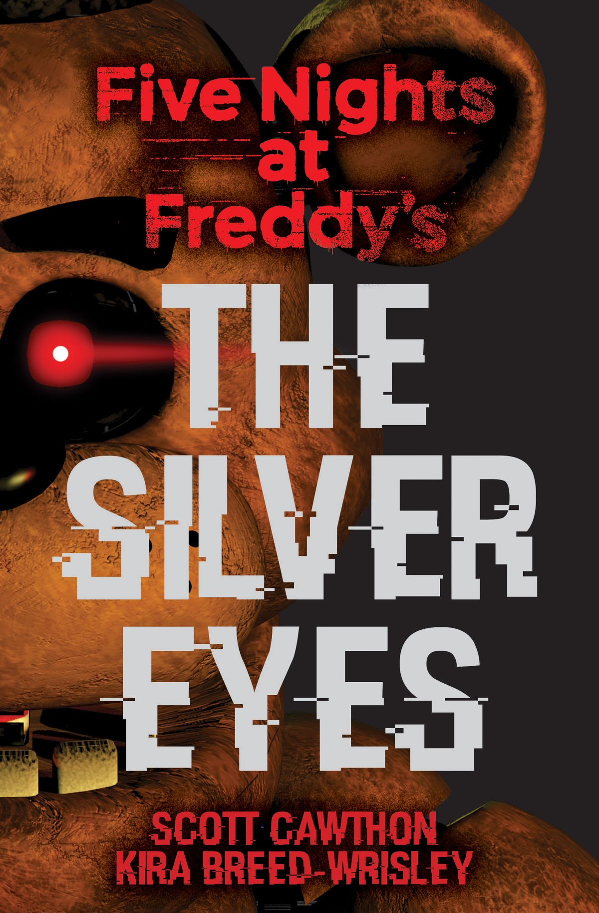
"“I’m not into horror books that much, but the silver eyes uses some scenarios that can actually happen in real life, The situations themselves aren’t actually what makes the situation fully scary; it’s the descriptions of how it occurs. It’s simply an immersive take on how terrifying using the uncanny valley can be, also charlie dies”"
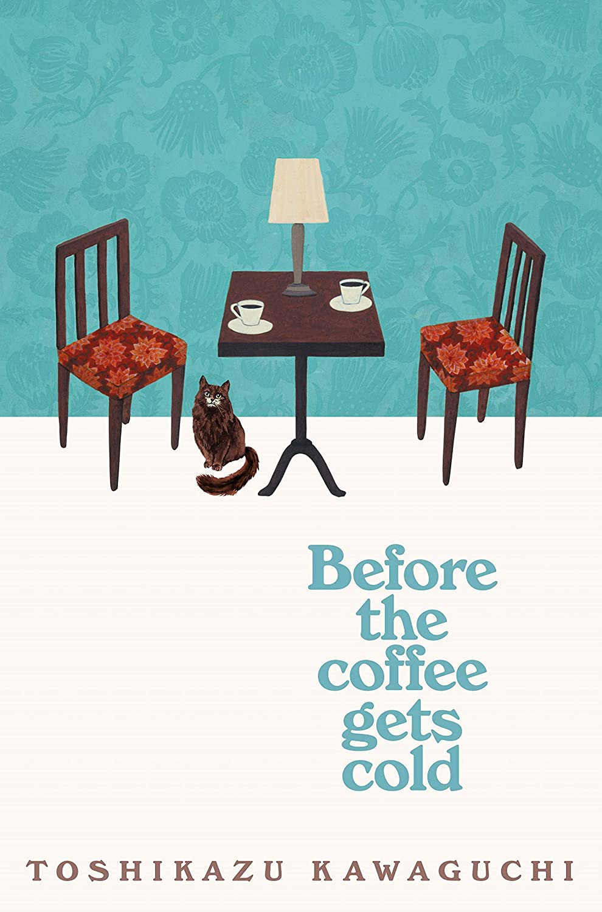
"Before the coffee gets cold is a beautifully written heart warming story .It switches between multiple protagonists with their own heartfelt stories ,relationships ,and reasons to want to use the cafe’s magic . with themes of heartbreak , love, loss and death ,it's an emotional rollercoaster but definitely worth the tears"
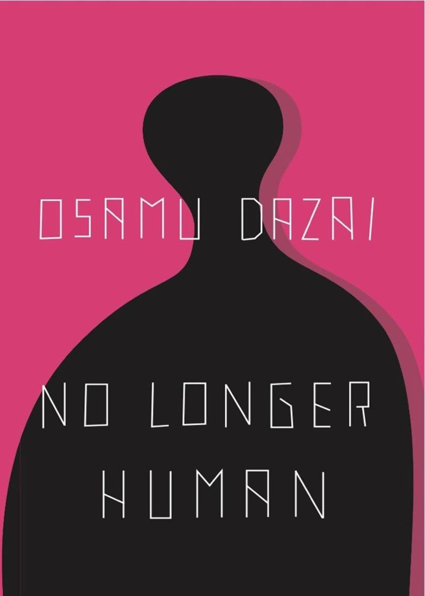
"I liked this book because it shows the alienation and despair of Ōba Yōzō, a man who feels disconnected from himself and humanity. Since childhood, he’s struggled to understand emotions, hiding behind jokes to mask his confusion. It feels like reading the journal of a man falling apart. By the end, Yōzō sees himself as completely ruined"
"The Perks of Being a Wallflower stuck with me. It speaks perfectly well with what it is to grow up, to feel invisible, yet still find the beauty in little things. Charlie’s story feels so real; his thoughts and emotions just make you feel seen and remind you that it is okay to be different"
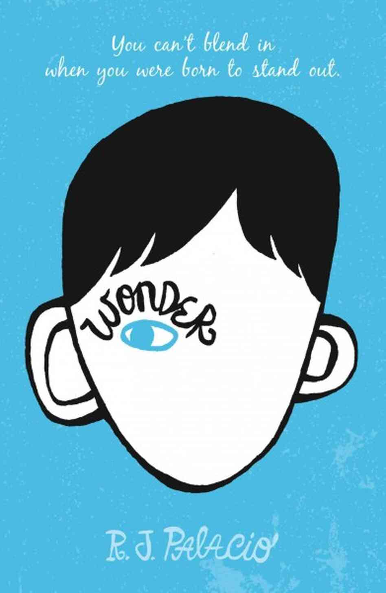
"Wonder tells the beautiful story of august, a 10yr boy who struggles in life due to his face deformity, whether it be in social experiences or straight up discrimination it reinforces the idea that we need to look beyond physical appearances and look upon the uniqueness of every individual"
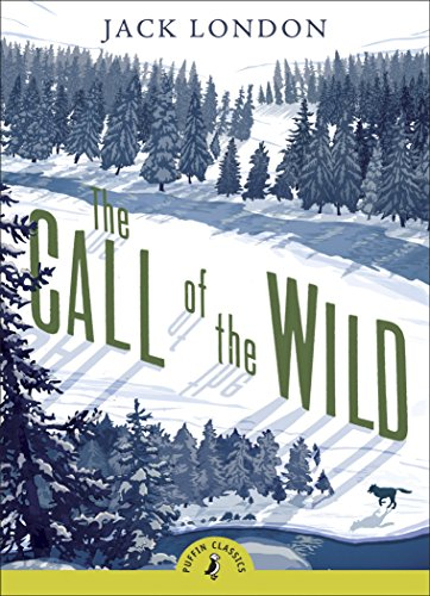
"This book is an amazing book. The book talks about a dog who is stolen from his home and thrown into the world of Yukon gold rush .what makes it great , strong emotional impact and the deep themes."
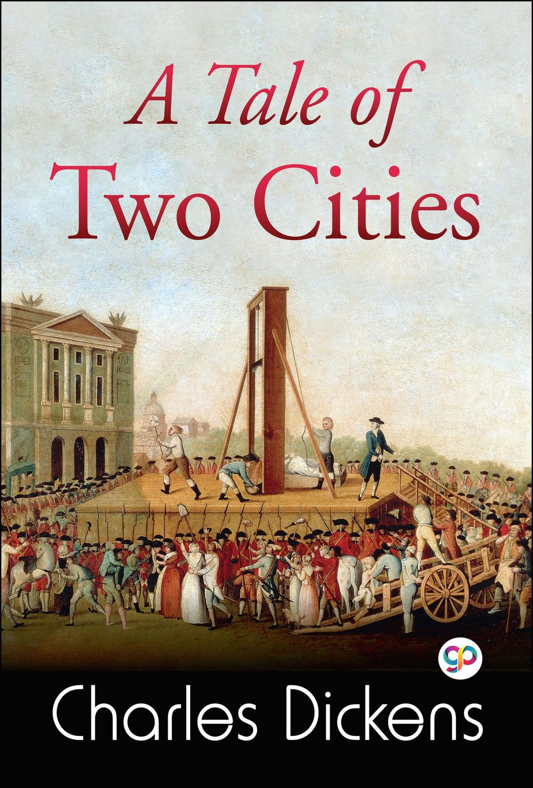
"I really loved how it's interesting and educational at the same time and the drama in it makes me want to continue reading more and more chapters. i recommend it to people who love exciting books and alot of actions and themes. overall I'm really impressed by the book."
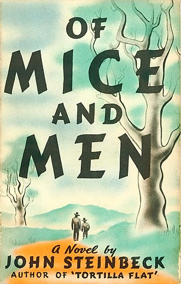
"It’s about George and Lennie, two guys just hoping that they’ll finally get a place, but Lennie has a disability, so he doesn’t really understand the world, so George watches over him. They kept working, saving, and for once it actually feels close. Then, just like that, fate steps in. “Out of all the words Of Mice And Men, the saddest are, 'it might've been'"
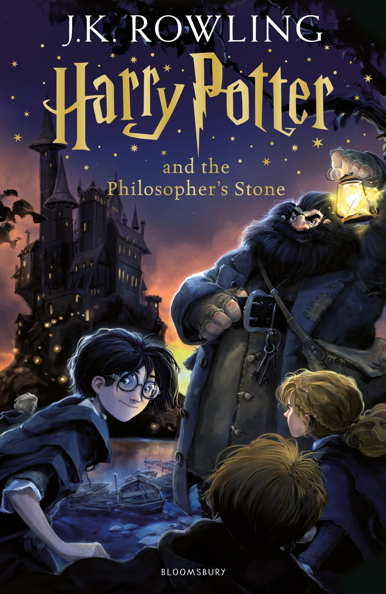
"As someone who practically grew up with the Harry Potter books glued to my hands, the series has always played a huge role in my childhood. It was all about magic spells, brooms, mystical creatures, and the idea that an owl could possibly show up at my window with a Hogwarts letter. Reading and rereading these books always entertains me, and I never get bored of them. Every time I open one of these books, it feels like escaping into a place where everything is magical."
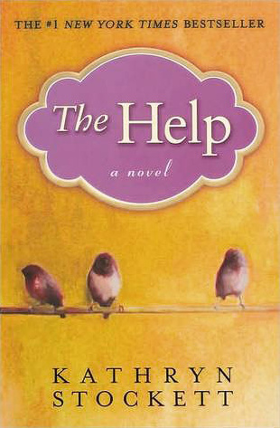
"The Help is a story about two Black maids and a young white woman who writes a book about their lives. It shows how unfair life was in the 1960s and how brave the women were to speak up. As a student, it’s a good book because it’s emotional, easy to follow, and teaches you about kindness, courage, and treating people equally. And finally its an inspiring and meaningful book"
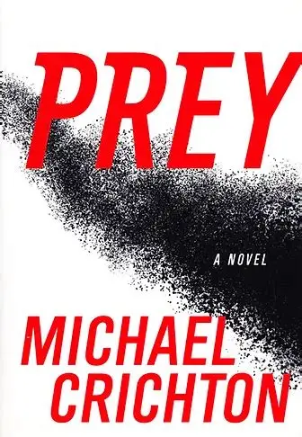
"It's Probably the best book I have ever read it's full of plot twists and it's a book that raises awareness about a problem we are facing now which is the terrifyingly fast speed at which ai is evolving even though it's a relatively long book its 100% worth reading and the end was amazing."
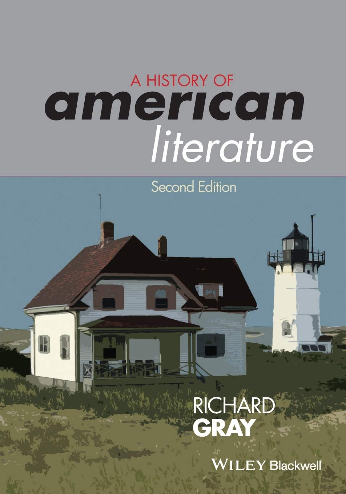
"'This book explains how American literature developed from the past to modern times. It talks about important writers, ideas, and movements. The author shows how history and culture influenced the writing. It is easy to understand and helpful for students learning about American literature."
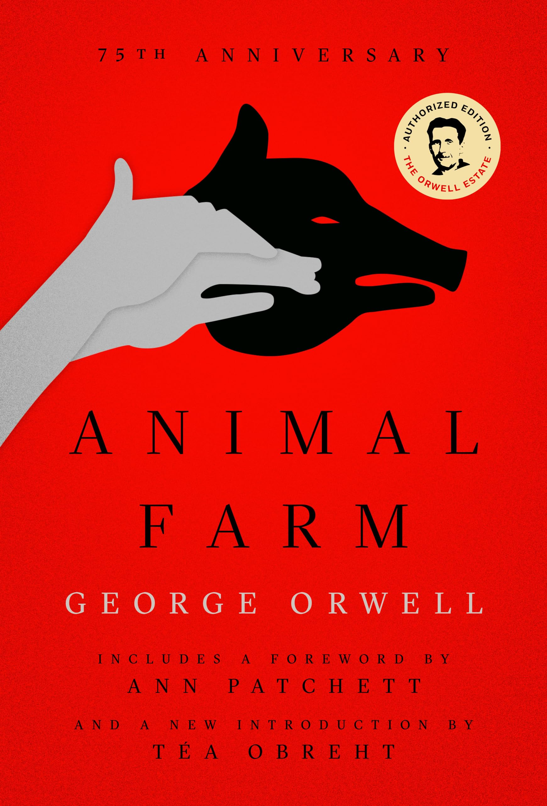
"basically a bunch of farm animals kick out the humans so they can finally have an equal society, but then the pigs end up taking over and turning into the same tyrants they got rid of, which kind of proves power corrupts no matter who has it. my favorite parts were the actual rebellion against Mr. Jones and how hopeful everyone was in the beginning before things went wrong. the worst part was definitely Boxer getting betrayed and then realizing at the end that nothing actually changed. favorite quote: 'All animals are equal, but some animals are more equal than others.' genuinely one of the best books I've read."
"Jules Verne's Around the World in Eighty Days follows Phileas Fogg, an English gentleman who bets he can circle the globe in eighty days, bringing servant Passepartout for a trip full of one disaster after another, including a detective named Fix convinced Fogg is a criminal. Along the way they rescue a woman named Aouda who joins them, and Fogg wins the bet because he forgot he gained a day traveling east. My favorite parts were rescuing Aouda and that final win. The worst parts were Fix's wrongful arrest and the missed trains and ships. Favorite line: 'Fortune favors the bold.' The best book I've read, a must read."
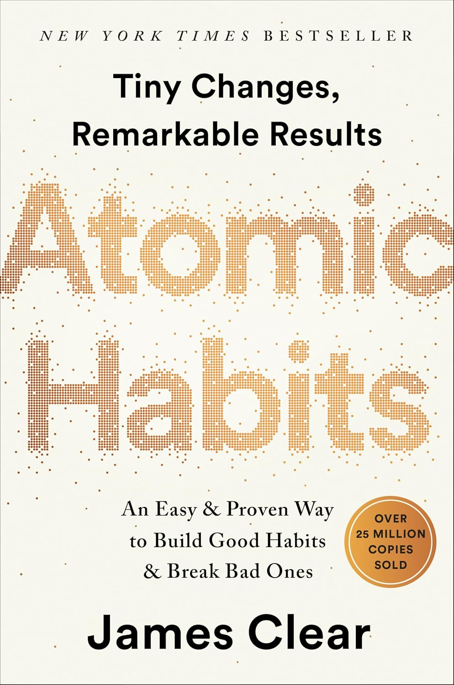
"Atomic Habits is basically about how tiny changes to your daily routine add up to huge results if you stick with them long enough, and it walks you through building good habits while dropping bad ones. What I liked most was seeing how those small 1% improvements actually compound, and the way it breaks down the habit loop clearly. My only complaint is some sections got a little repetitive and didn't feel super backed by science. Favorite lines: 'Habits are the compound of self improvements,' and 'Every action you take is a vote for the type of person you wish to be.' Solid, practical read for lasting change."
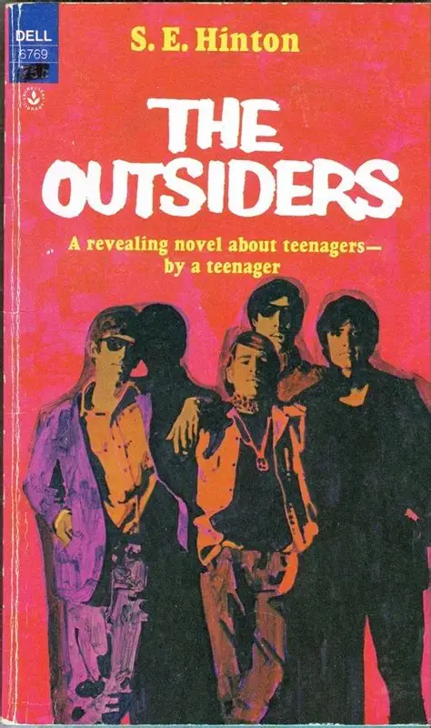
"Told from Ponyboy Curtis's point of view, a fourteen year old Greaser from the rough side of town, this book is about the tension between Greasers and rich Socs who get away with everything. My favorite moment was Ponyboy and Johnny running into a burning church to save kids, showing that being brave and good has nothing to do with social class. The worst parts were Johnny getting stabbed, Ponyboy nearly failing school, and the endless Soc vs Greaser drama. Favorite lines: 'Stay gold, Ponyboy. Stay gold,' 'Things are rough all over,' and 'I lie to myself all the time, but I never believe me.' Definitely a must read."
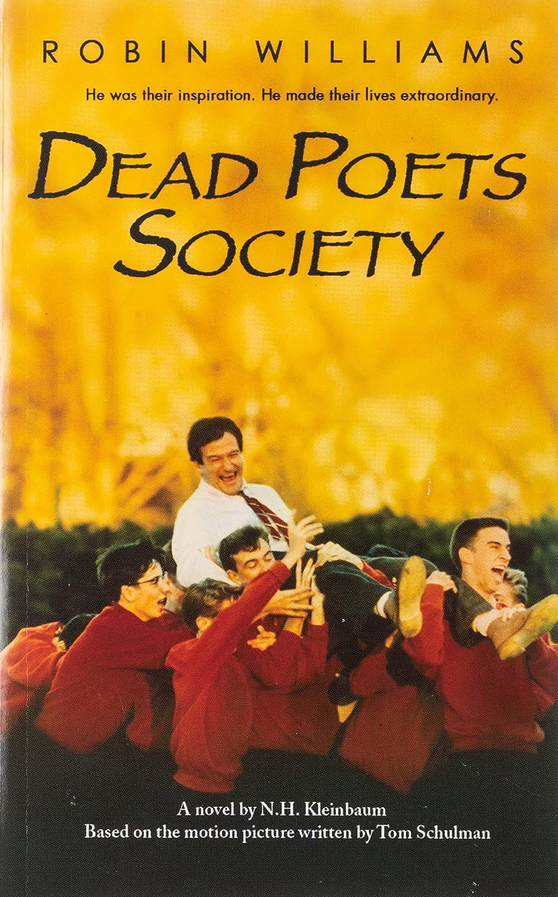
"This one follows Mr. Keating, a teacher who pushes his students to 'seize the day' and actually means it. My favorite moments were him introducing Carpe Diem in his very first class, the students secretly bringing back the Dead Poets Society, and the ending where the boys stand on their desks for him. What bothered me was the school's strict rules crushing everyone's freedom, Neil being forced by his dad to quit acting, and Keating getting blamed and fired unfairly. Favorite quotes: 'Carpe diem. Seize the day,' 'Words and ideas can change the world,' and 'Poetry speaks to the human spirit.'"
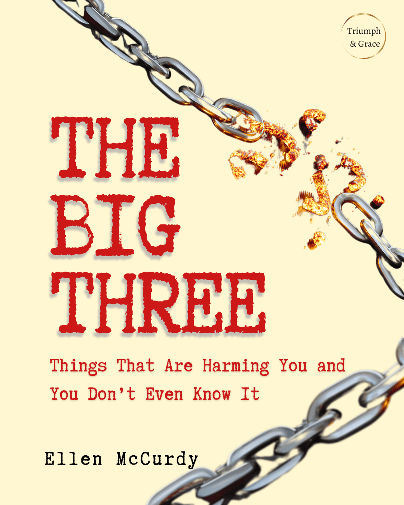
"Robert Glazer's The Big Three breaks life into three pillars, your partner, your vocation, and your community, arguing real satisfaction comes when all three line up with your actual values. I loved the sections on the peace of that alignment, the turning point of reclaiming your agency, and the value of a supportive community. The rough parts were the 'Four Horsemen,' terror, bewilderment, frustration, and despair, plus how draining it is to live against your true self or force a career or relationship that doesn't fit. Favorite lines: 'Adversity truly introduces us to ourselves,' and 'It is always my choice.' Best book I've read, easily."
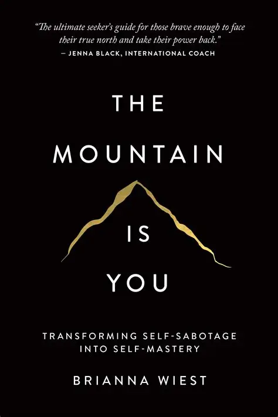
"Brianna Wiest digs into self-sabotage here, why our fears, habits, and negative thoughts keep getting in the way of our own growth, and why we repeat harmful patterns even when we know better. My favorite takeaways were realizing discipline and self-trust are what actually create change, and that healing yourself matters more than proving anything to other people. My only issue is some ideas repeat a bit too much, though the message still lands. Favorite lines: 'Your new life is going to cost you your old one,' and 'The mountain you are trying to climb is yourself.' Honest and motivating, I'd recommend it."
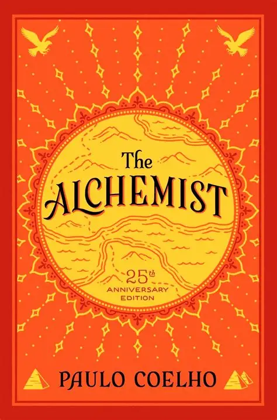
"Santiago is a young shepherd chasing a dream of hidden treasure, and his trip from Spain all the way to Egypt teaches him a lot about courage, patience, and actually following your dreams. My favorite parts were him leaving his old life behind, crossing the desert, and slowly learning to trust his own heart. A few sections dragged a little and some ideas felt kind of confusing. Favorite quote: 'When you want something, all the universe conspires in helping you to achieve it.' Easily the best book I've read, truly a must read."
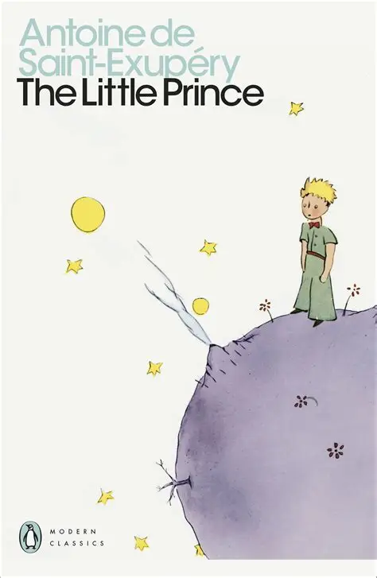
"The Little Prince follows a young prince hopping from planet to planet, meeting all these different characters and picking up little lessons about life, love, and people along the way. It's such a simple story but it's packed with meaning underneath. I loved the emotional lessons each character teaches and how easy the language is to follow. My only issue is a couple parts felt confusing and younger readers might miss the deeper message. Favorite quote: 'It is only with the heart that one can see rightly; what is essential is invisible to the eye.' A genuinely beautiful book, highly recommend."
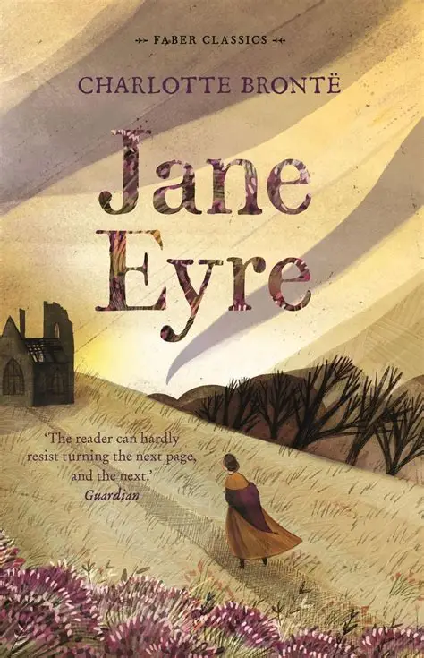
"Jane Eyre grows up as an orphan facing hardship after hardship but comes out strong and independent. She suffers through Lowood School but still stands up for herself, and later works as a governess at Thornfield Hall where she falls for Mr. Rochester. My favorite parts were her courage at Lowood, the romance with Rochester, and her choosing independence and self respect over everything else. The hardest parts were her rough childhood and the dark secrets at Thornfield. Favorite lines: 'I am no bird; and no net ensnares me,' and 'I am a free human being with an independent will.' This book made me cry, definitely a must read."
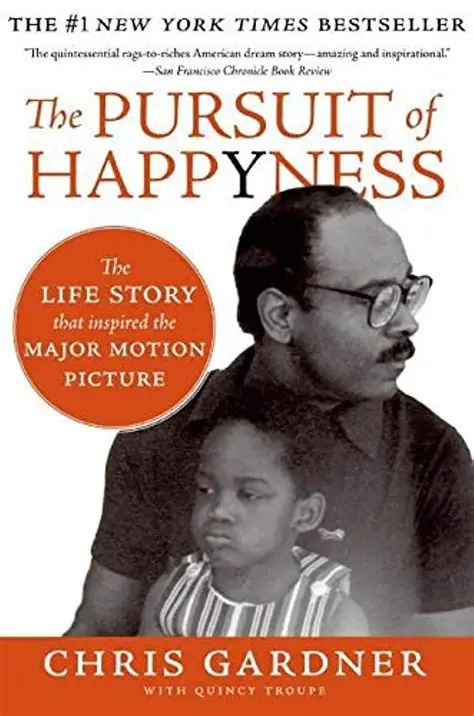
"This is the true story of Chris Gardner, a salesman who becomes homeless while raising his son. With all that hardship he never gives up, and through hard work lands an internship at a brokerage firm and builds a life for them both. My favorite parts were him getting the job, his bond with his son, and his joy when it paid off. The hardest parts were sleeping in a subway bathroom, struggling with rent, and watching his son suffer. Favorite lines: 'Don't ever let somebody tell you you can't do something,' and 'You got a dream, you gotta protect it.' This one made me cry, a must watch."
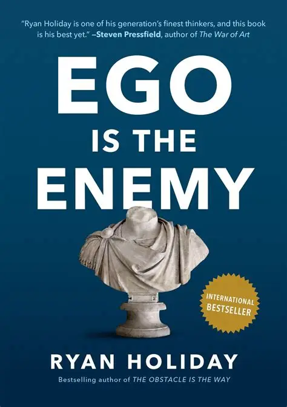
"Ryan Holiday's Ego Is the Enemy is all about managing your own ego, both with yourself and with everyone around you. Honestly I think every athlete, entrepreneur, leader, or just anyone trying to do something with their life should read it. My favorite part was realizing how to actually deal with high ego coworkers, and there wasn't really a bad moment for me in this one. Favorite quote: 'I don't like work, no man does, but I like what is in the work: the chance to find yourself.' Truly a must read."
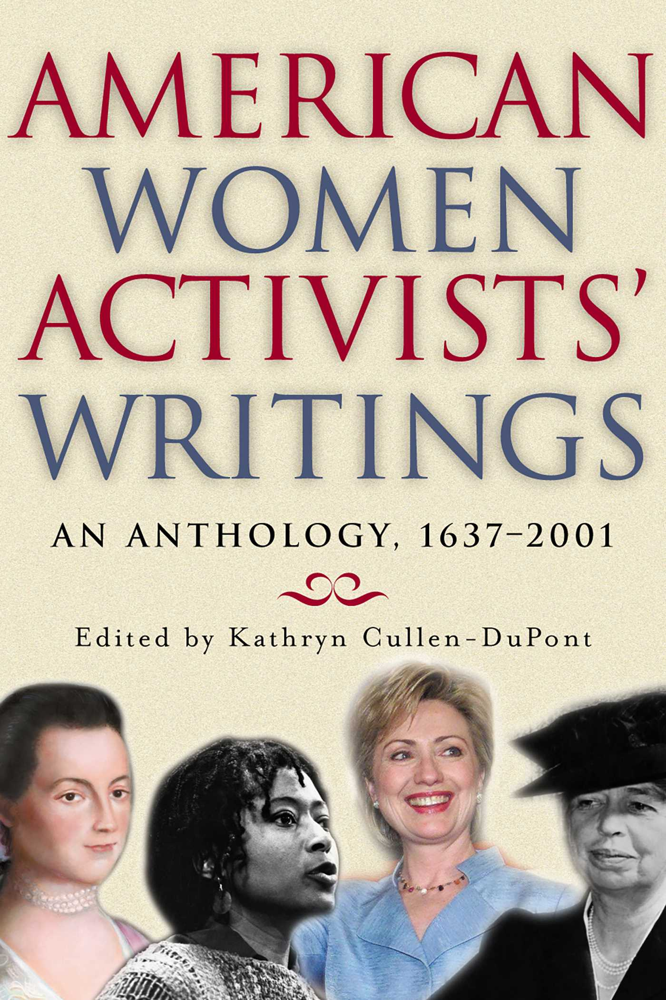
"Gloria Steinem gave this speech in 1971 at the founding of the National Women's Political Caucus, and it's a powerful call for equality. She frames the fight for women's rights not as a small reform but as a full revolution toward a fairer, humanist society free from roles based on sex or race. My favorite moment was hearing her say 'This is no simple reform. It really is a revolution,' and the impact of launching such a major advocacy group. The hardest part was realizing how strict the limits on women were in the 1970s. This speech pushed intersectional revolution forward and still feels relevant today, a must read."
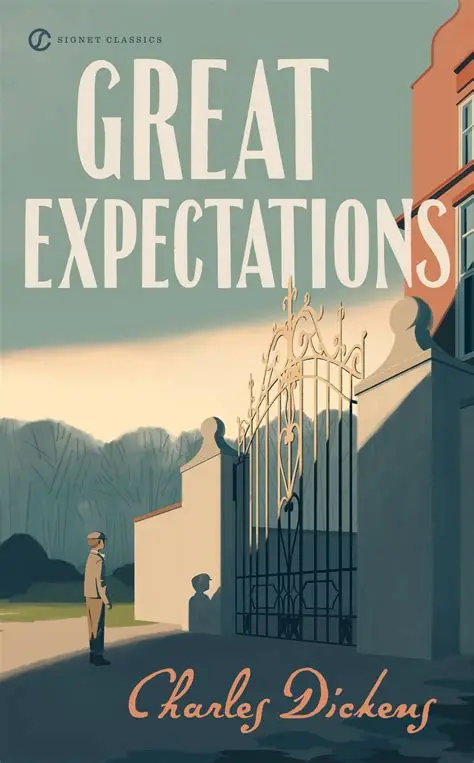
"Pip is an orphan raised by his strict older sister and her kinder husband Joe, and everything changes after he helps an escaped convict and starts visiting Miss Havisham and Estella. Once he receives money from a mystery benefactor he moves to London to become a gentleman, assuming Miss Havisham is behind it. My favorite parts were finding out Magwitch was the real benefactor, Pip realizing who his friends are, and his loyalty to Joe. What I didn't love was Pip treating Joe badly once he got money, and how cruelly Estella treats him. Favorite line: 'I loved her against reason, against promise, against peace.' Best book I've read."
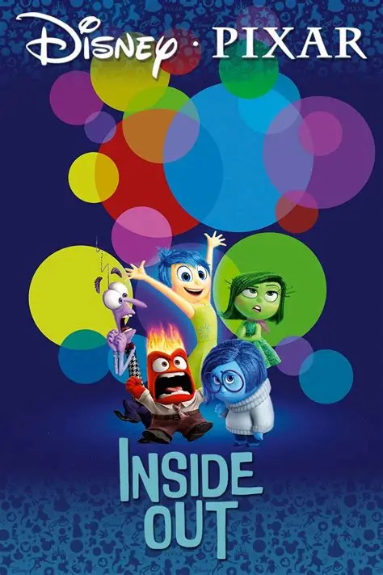
"Inside Out follows Riley, a young girl adjusting to a move to a new city, guided by the five emotions running her mind, Joy, Sadness, Anger, Fear, and Disgust. It's a good lesson in dealing with change and accepting yourself. My favorite moments were Joy realizing how important Sadness is, and Bing Bong's sacrifice near the end. The hardest parts were watching Riley feel lost and unhappy, and saying goodbye to Bing Bong. Favorite line: 'Do you ever look at someone and wonder, what is going on inside their head?' Best animated movie I've seen, super emotional, must watch."
"Robert Neville is a U.S. Army virologist who seems to be the last immune person in a post apocalyptic New York after a man made virus turns everyone else into nocturnal mutants called Darkseekers. Alone except for his dog, he spends his days searching for a cure while trying to survive the nights. My favorite parts were his determination to keep hoping, his bond with his dog, and the sacrifice he makes to save humanity. The hardest parts were his isolation and how heavy the loneliness gets. Favorite line: 'Hope is what keeps us alive.' Best book I've read, truly a must watch."
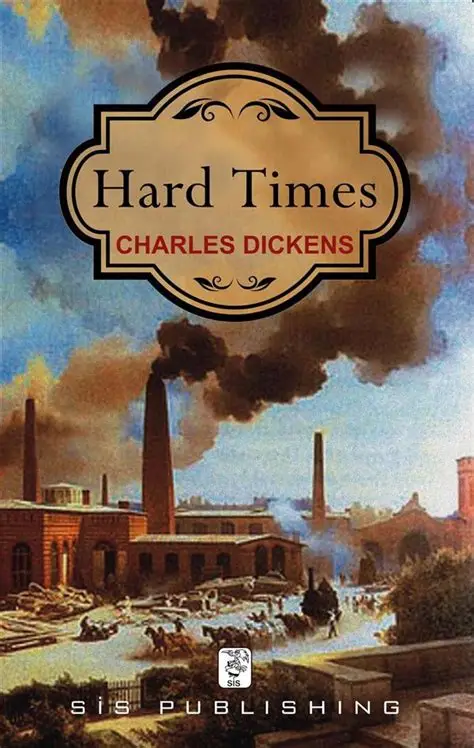
"Hard Times is Dickens taking aim at Victorian industrialization and the obsession with cold facts over imagination. Set in the grim town of Coketown, it shows what happens when people value material gain over compassion. My favorite parts were Louisa realizing how empty her upbringing left her, Stephen Blackpool holding onto his integrity, and Gradgrind letting go of his rigid worldview. The worst parts were the bleak setting, the harsh treatment of workers, and an ending that didn't feel satisfying. Favorite line: 'Now, what I want is Facts. Teach these boys and girls nothing but Facts.' Heavy read, but powerful, recommended for anyone into social critique."
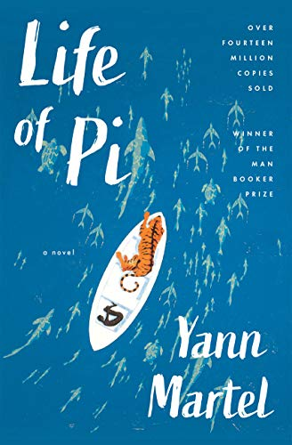
"Life of Pi is about a boy named Pi who survives a shipwreck and ends up stranded on a lifeboat with a Bengal tiger, Richard Parker. Between storms, hunger, and loneliness he learns to survive alongside the tiger, and after 227 days at sea he reaches land and tells two versions of what happened, leaving you to decide which is true. My favorite parts were his life in India, his bond with family and animals, and what he learns about faith. The hardest parts were losing his family and the weight of that grief. Favorite line: 'It is how we understand it, no?' Favorite movie, deeply moving, must watch."
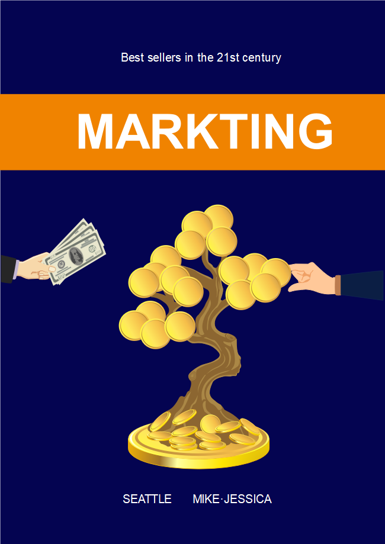
"Philip Kotler's Marketing lays out marketing as creating value and building relationships with customers that actually last, using the 4Ps, Product, Price, Place, and Promotion, as the foundation for every strategic decision. It also gets into consumer behavior and ethical marketing. My favorite parts were seeing how the 4Ps work together and understanding what drives people's buying decisions. My only complaint is some sections got dense with business jargon. Favorite line: 'Every action you take is a vote for the type of person you wish to become.' Practical and genuinely useful, must read."
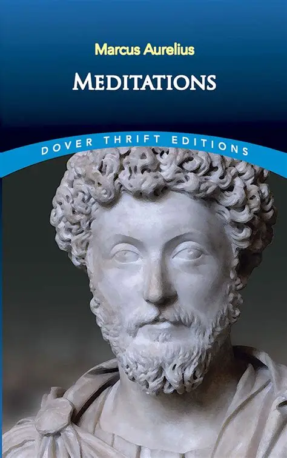
"Meditations is Marcus Aurelius's private journal written during his military campaigns, full of timeless Stoic philosophy. It's not a polished treatise, just raw personal notes and exercises in self discipline, which makes it feel like philosophy you can actually practice daily. My favorite parts were his honesty, his reflections on nature and the universe, and how he insists self improvement must serve the greater good. The style gets repetitive and fragmented at times, but that's the point since it was never meant to be published. Favorite line: 'You have power over your mind, not outside events. Realize this, and you will find strength.' Profound and intimate, a must read."
"A Bronx Tale follows Calogero growing up in the Bronx in the 1960s, torn between his hardworking honest father and Sonny, a powerful gangster who ends up becoming his mentor. As he gets older he has to actually choose between a life of crime and the values his dad taught him. My favorite parts were Sonny teaching him about respect, the biker bar scene, and his bond with his father. The rough parts were the violence, the racial tension, and Sonny's ending. Favorite lines: 'The saddest thing in life is wasted talent,' and 'Now yous can't leave.' Best movie I've ever watched, easily a must watch."
"This book argues confidence isn't something you're just born with, it's a skill you build through taking risks, messing up, and trying again. Katty Kay and Claire Shipman really dig into how fear of failure and overthinking hold teenagers back, and how confidence actually grows from small consistent actions. My favorite parts were the honest tone, the focus on progress over perfection, and the reminder that action always comes before confidence. My only complaint is some parts felt a little generic and could've used more personal stories. Favorite lines: 'Confidence is something you build,' and 'Action comes before confidence, not the other way around.' Realistic, empowering, relevant, must read."
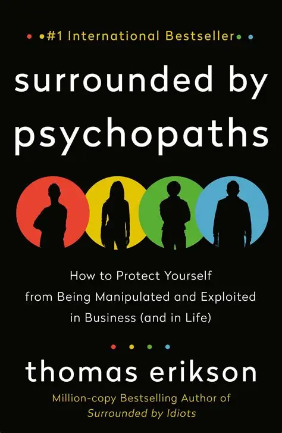
"Thomas Erikson's Surrounded by Psychopaths teaches you how to spot subtle manipulation in everyday interactions so people can't emotionally control you as easily. My favorite parts were learning how manipulators size up your personality first, recognizing subtle guilt tripping, and just feeling stronger once you start setting real boundaries. What got old was the repetitive explanations, the constant stream of manipulative people stories, and advice that sometimes felt kind of obvious. Favorite lines: 'Not everyone who smiles at you has good intentions,' and 'Setting boundaries isn't rude, it's self respect.' Useful lessons overall but felt uneven, I've read better books on this."
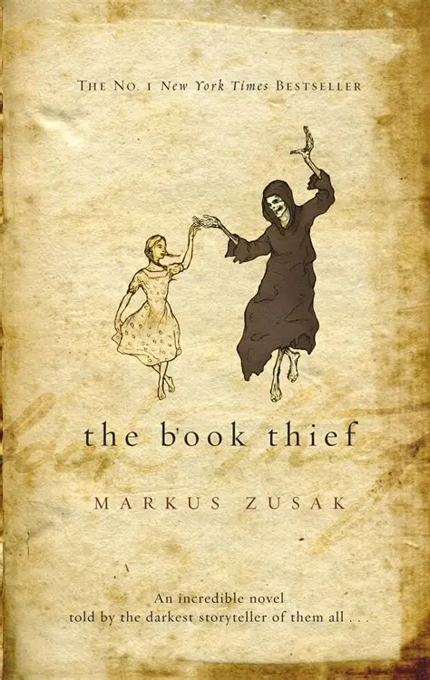
"Set in Nazi Germany, The Book Thief follows Liesel Meminger, a young girl who finds comfort stealing and reading books despite the war, hunger, and fear. Through her friendship with Rudy Steiner and Max, a Jewish man her family is hiding, she learns about courage, loss, and how words can hurt or heal. My favorite parts were her first stolen book, her loyalty to Rudy, and Max's hopeful handwritten stories. The hardest parts were the bombing scenes and the deaths of people she loves. Favorite line: 'I have hated the words and I have loved them, and I hope I have made them right.' Emotional and powerful, unforgettable."
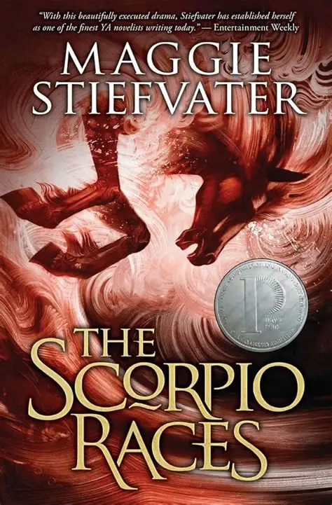
"On the island of Thisby, riders risk their lives every November racing deadly water horses out of the sea. The story follows Sean Kendrick, a returning champion, and Puck Connolly, the first girl to ever enter the race, as Sean chases freedom and Puck fights to keep her family together. My favorite parts were Sean teaching Puck how to connect with a water horse, the tense final race, and the quiet respect between them. The rough parts were a brutal beach attack, the constant hostility toward Puck, and a rushed subplot with her brother. Favorite line: 'I am so very tired of being afraid.' Gripping and atmospheric, must read."
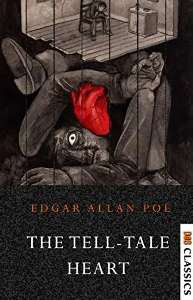
"This one follows a man haunted by the pale blue eye of the old man he lives with, and driven by fear and obsession he ends up murdering him and hiding the body under the floorboards. When the police show up his guilt builds until he hears a heartbeat getting louder and louder, and finally confesses. My favorite parts were the murder itself, the investigation, and that terrifying heartbeat. The worst parts were dismembering the body and the narrator losing it at the end. Favorite line: 'It grew louder, louder, louder!' Best book I've read, genuinely a must read."
"This is the sequel to It Ends With Us, picking up with Lily Bloom's life after her divorce from Ryle as she reconnects with her first love, Atlas Corrigan. Told from both Lily and Atlas's perspectives, it reveals how hard Atlas's childhood was and how deep his feelings for Lily still run. My favorite parts were Lily's courage to break the cycle of abuse, finding love again, and the hopeful new start with Atlas. The hardest parts were the painful memories of her past and facing that trauma. The biggest lesson was that choosing yourself comes first. Emotional, empowering, heartfelt, a must read."
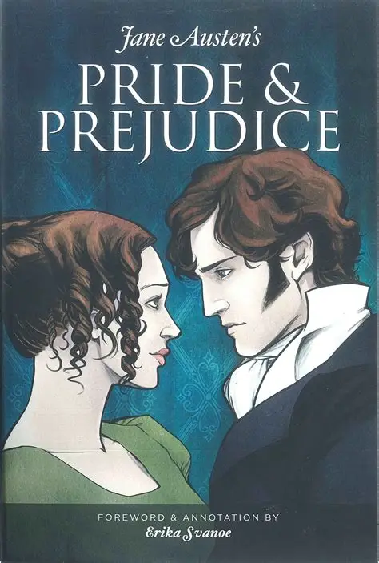
"Jane Austen's classic follows Elizabeth Bennet, sharp and independent, and Mr. Darcy, a wealthy but prideful gentleman, as they clash before slowly falling for each other in early 19th century England. My favorite parts were Elizabeth's wit and confidence, Darcy's growth through real self reflection, and that pivotal letter scene that changes everything between them. The only slow parts were some of the social event descriptions, though they capture the culture of the time well. Favorite line: 'Till this moment I never knew myself.' Timeless and beautifully written, truly a must read."
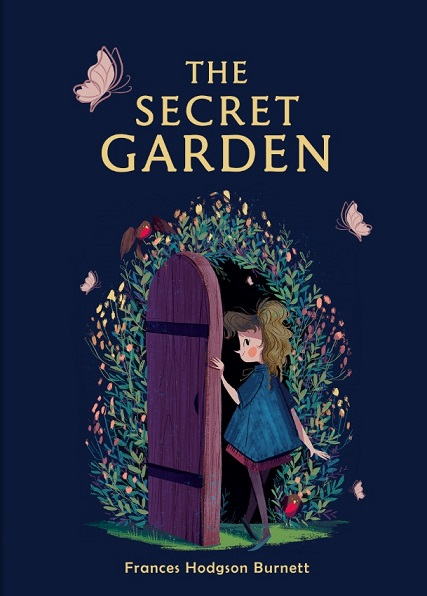
"Mary Lennox is a lonely, spoiled girl sent to live with her uncle in Yorkshire after her parents die, and she discovers a hidden garden that transforms her life along with everyone around her. My favorite parts were her finding the key to the garden, Colin taking his first steps, and the garden finally blooming with life. The harder parts were Mary's neglected childhood and Colin's sadness and anger from being sick so long. Favorite line: 'Where you tend a rose, my lad, a thistle cannot grow.' Best book I've read, truly a must read."
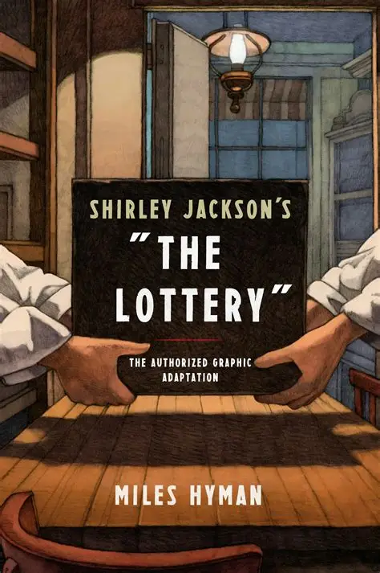
"This chilling short story follows a village that blindly keeps up an old tradition every single year, and it all seems pretty normal until the shocking ending reveals just how cruel following tradition without question can be. My favorite part was that twist at the very end, it really makes you sit and think about human behavior. The worst part was obviously the brutal outcome of the lottery itself. Favorite line: 'Lottery in June, corn be heavy soon.' Thought provoking and honestly unsettling, truly a must read."
"Ratatouille follows Remy, a rat who dreams of becoming a chef in Paris despite everyone's fear of rats, and he forms an unlikely partnership with Linguini, a young kitchen worker, proving talent can come from anywhere. My favorite parts were Remy secretly cooking in the restaurant, the final dish served to the food critic, and Anton Ego's childhood memory that changes his review. The harder parts were Remy's separation from his family and the tension when his secret almost got out. Favorite line: 'Not everyone can become a great artist, but a great artist can come from anywhere.' Inspiring and heartfelt, a must watch."
"This 2006 biographical drama is based on the real life of Ron Clark, a teacher who leaves a comfortable job in North Carolina to teach unmotivated, disruptive students in Harlem. He wins them over with patience, creativity, and empathy, from songs and chants to visiting their homes. My favorite parts were his creative teaching methods, his refusal to give up on any student, and the class winning a national academic competition. A few scenes felt overly dramatic, but they still landed the emotional point. Favorite line: 'I believe that if someone tells you that you can do something, you will.' Realistic and deeply motivating, must watch."
"This book tells the true story of Harriet Tubman, born into slavery in the early 1820s, who despite a severe childhood injury escaped to freedom and became a conductor on the Underground Railroad, risking her life to lead others out. She later worked as a scout, spy, and nurse for the Union Army during the Civil War. My favorite parts were her escape, her courage helping others, and how her legacy is remembered today. The hardest parts were her injury and the cruelty of slavery. Favorite line: 'I never ran my train off the track, and I never lost a passenger.' Best book I've read, truly a must read."
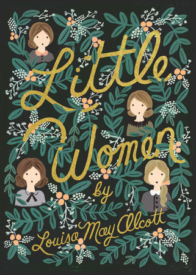
"Little Women follows the four March sisters, Meg, Jo, Beth, and Amy, growing up in New England during the Civil War while their father is away fighting. Guided by their mother, each learns kindness, patience, and hard work while chasing her own dreams. My favorite parts were the sisters helping poorer families despite having little themselves, Jo pursuing her dream of becoming a writer, and her friendship with Laurie. The hardest parts were Beth's illness and the emotional weight of that storyline. Favorite line: 'I am not afraid of storms, for I am learning how to sail my ship.' Best book I've read, truly a must read."
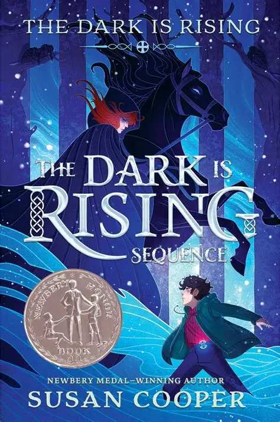
"Will Stanton discovers on his 11th birthday that he's the last of the Old Ones, immortal guardians of the Light, and has to travel through time gathering six magical Signs, Iron, Bronze, Wood, Stone, Fire, and Water, before the Dark can plunge the world into endless winter. My favorite parts were the magical, snowy English countryside and the moment all six Signs finally come together. The scarier parts were the threat of being hunted by the Rider, Will's isolation from his family, and the eerie pressure over the whole village. Favorite line: 'Fear is a ghost, Will Stanton. It is not a thing.' Haunting and unforgettable."
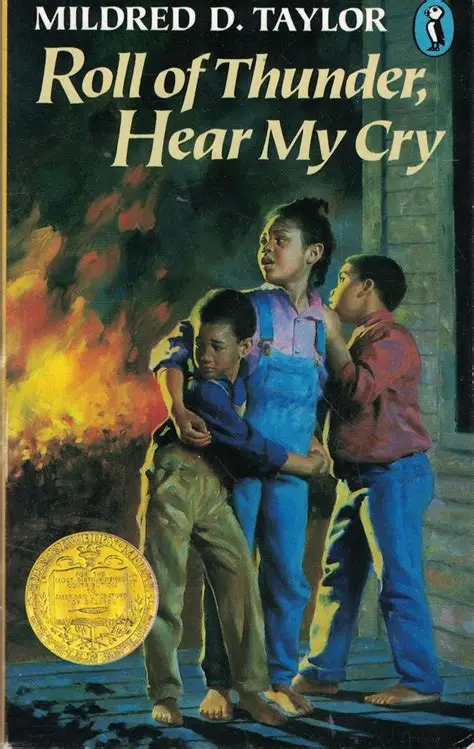
"Set in 1930s Mississippi, this follows the Logan family fighting for their land against systemic racism, seen through Cassie Logan as she loses her innocence witnessing the harsh realities of the Jim Crow South. It builds to Papa setting fire to the cotton fields to save T.J. from a lynch mob, showing resilience and courage. My favorite part was the sacrifice Papa makes for T.J. The hardest parts were the Berry family's burning and Cassie's encounter in Strawberry. Favorite line: 'All that belongs to you, as long as you live, you look even at the sky and know that you are somebody.' Emotional and moving, a must read."
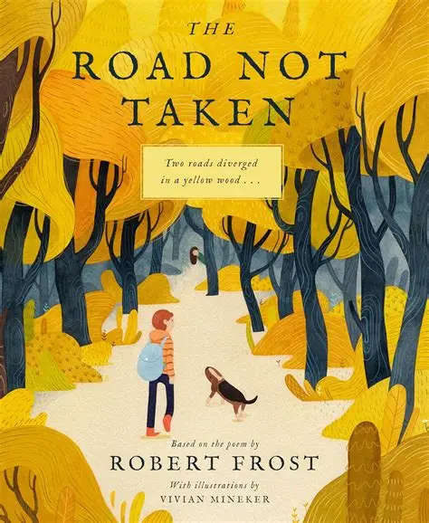
"Robert Frost's classic poem is about a traveler who reaches a fork in a yellow wood and has to choose between two paths, eventually picking the one 'less traveled by,' knowing it will shape his life forever. My favorite part was him pausing to reflect before making that bold choice, and realizing later how much that decision mattered. The hardest part was the sadness of knowing he could never go back and try the other path. Favorite line: 'And that has made all the difference.' Timeless and deeply meaningful, a must read."
ZAS Library Information
Library Rules
Click here to view library rules and borrowing guidelines
Click to view
Remember to bring the books back!
its necessary to keep them in good shape
Need Help?
Ask Mrs. Agnis, our librarian!
+20 10 25747714